Tarih: 25 Haziran 2026
Hazırlayan: Efekaan Bengi
Odak: Geçici metrik (AUC) artışları uğruna genetik verinin kümülatif dağılımını tahrip eden kontrolsüz sentetik veri (SMOTE) uygulamalarının, tam otonom bir istatistiksel hakem mimarisi (KS-Testi) ve sızıntısız turnuva motoruyla engellenerek; tıbbi verinin biyolojik bütünlüğünün ve klinik tahmin gücünün %100 organik olarak korunması.
CategoricalEncoder ve NumericalPreprocessor bileşenleri sayesinde Veri Sızıntısı (Data Leakage) %100 engellenmiştir.Bu çalışma, genetik varyant verilerindeki (MASTER, KANSER, PAH, CFTR) yüksek sınıf dengesizliği ve gürültü (noise) problemlerini çözmek amacıyla geliştirilmiş 11 aşamalı dinamik bir pipeline mimarisini detaylandırmaktadır. Klasik makine öğrenmesi uygulamalarında sıkça görülen sabit hiperparametre kullanımı ve manuel model seçimi gibi yaklaşımların yerine, geliştirilen bu sistem her veri panelinin kendi yapısına uygun kararları istatistiksel testlere (KS-Test, Mutual Information, Cross-Validation) dayanarak dinamik olarak almaktadır.
Sistemin yapısında gerçekleştirilen son güncellemelerle birlikte (Feature Selection aşamasındaki Mutual Information hesaplamalarının deterministik hale getirilmesi ve küçük örneklemli CFTR panelinde RepeatedStratifiedKFold kullanılması), model varyansı minimize edilmiş ve Pipeline'ın tutarlı, tekrarlanabilir sonuçlar üretmesi güvence altına alınmıştır.
Model eğitimine başlanmadan önce veri setlerindeki dengesizlikler, özellik dağılımları ve değişkenler arası korelasyonlar analiz edilerek görselleştirilmiştir.
2.1 Sınıf Dağılımı (Class Imbalance): Veri setlerindeki Patojenik (1) ve Benign (0) sınıfları arasındaki dengesizlik durumu.
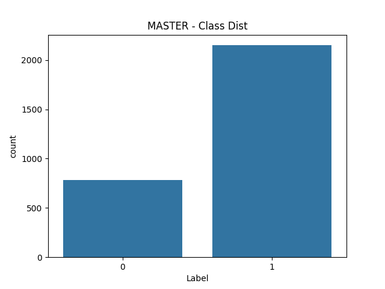
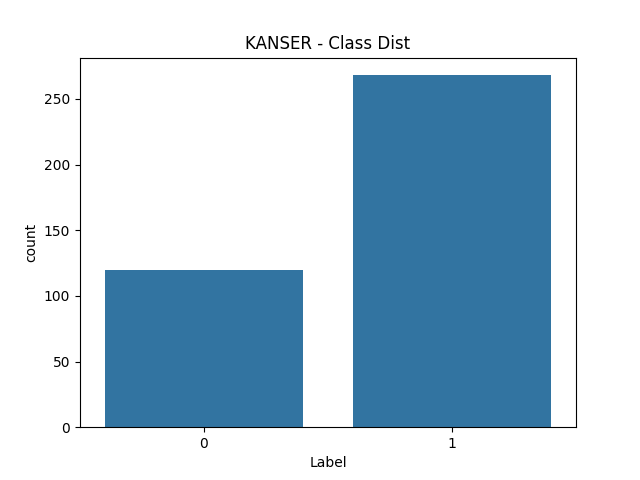
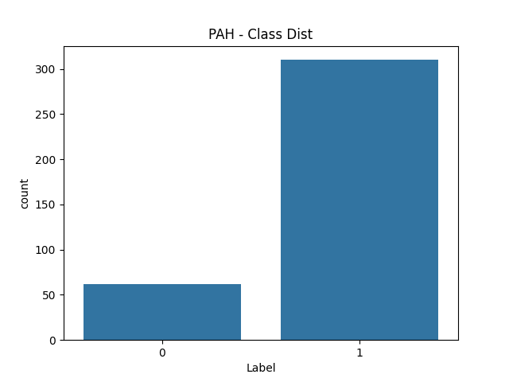
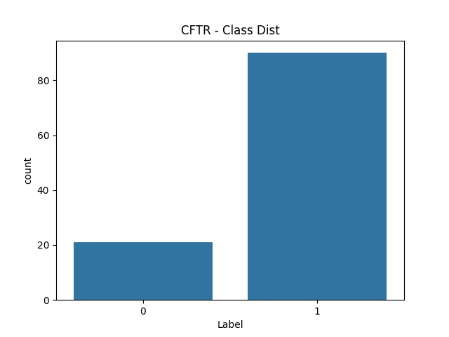
2.2 Özellik Dağılımları ve Korelasyonlar: Genetik ve biyolojik skorlar arasındaki ilişkiler. (Açıklama: Bu Heatmap (Isı Haritası), özellikle EK_ öneki taşıyan çekirdek genetik özelliklerin birbirleriyle ve hedeflenen hastalık (Label) ile olan korelasyonunu -1 ile 1 arasındaki standart skalada göstermektedir. Kırmızı renkler pozitif korelasyonu (biri artarken diğeri artar), mavi renkler negatif korelasyonu ifade eder.)
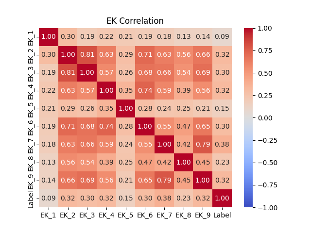
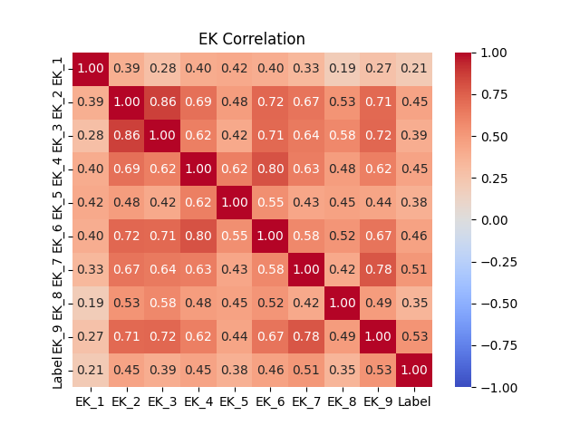
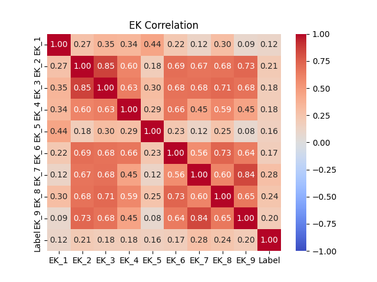
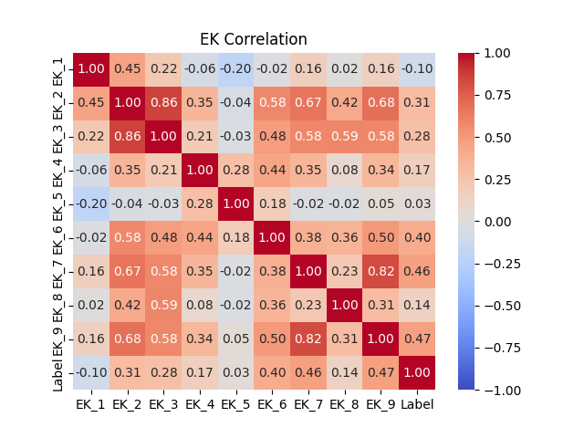
2.3 Temel Bileşenler Analizi (PCA): Verinin iki boyutlu uzaydaki izdüşümü ve sınıfların ayrılabilirliği.
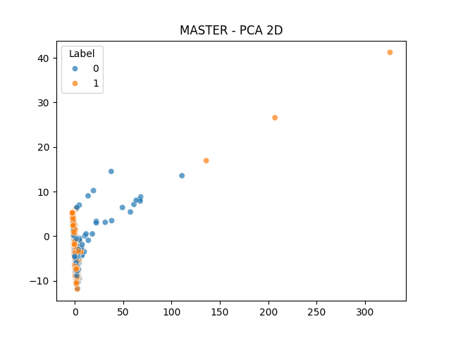
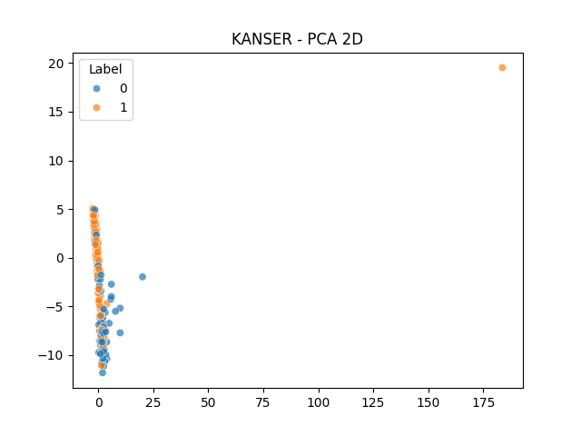
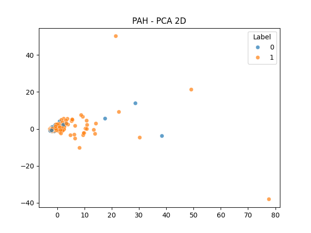
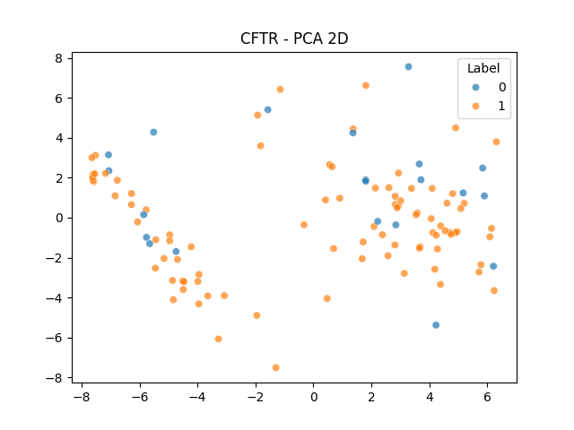
Eksik verilerin (Missing Values) doldurulması süreci, modelin nihai performansını doğrudan etkilemektedir. Karmaşık yöntemlerin her veri setinde en iyi sonucu vereceği varsayımı yerine, pipeline içerisinde her panel için Cross-Validation testleri çalıştırılarak en uygun Imputer yöntemi belirlenmiştir.
Eksik Veri Haritaları (Missingness Map):
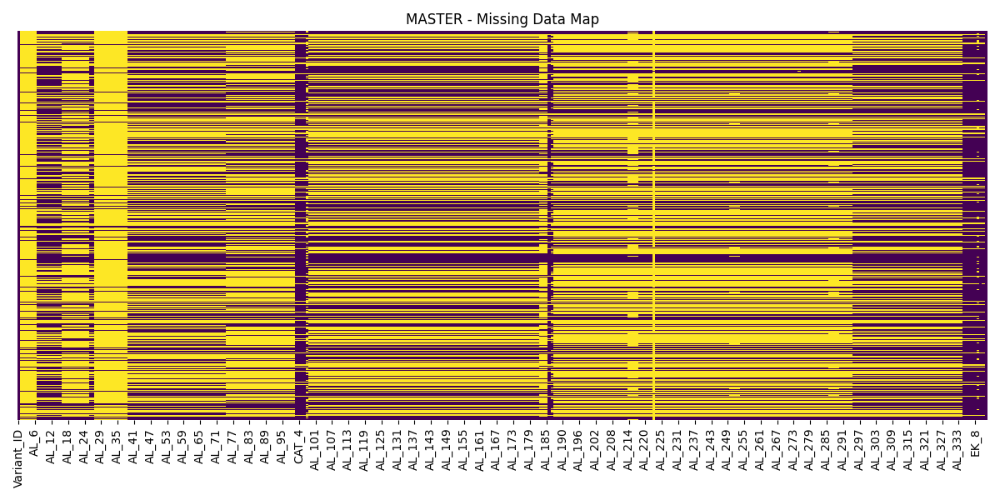
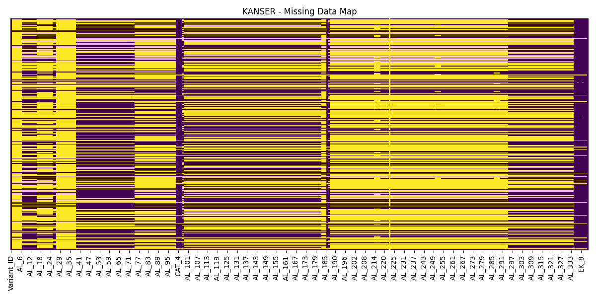
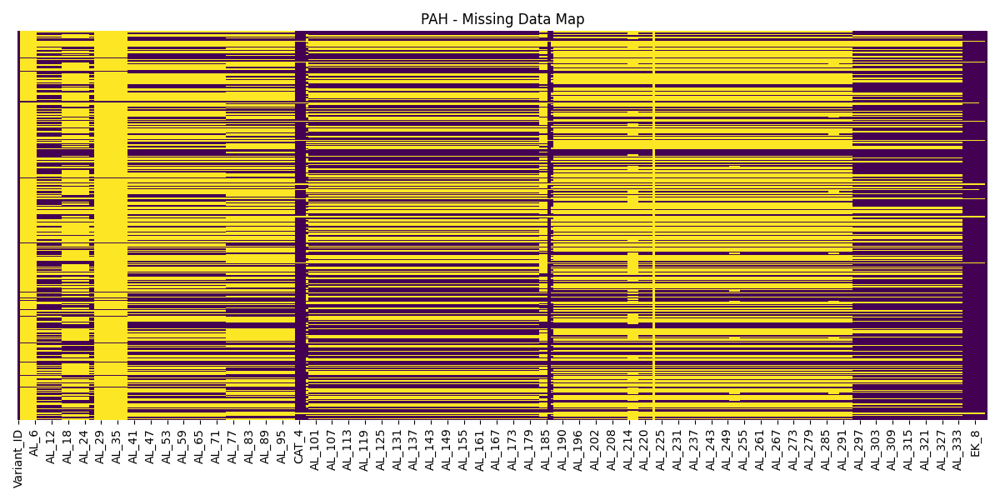
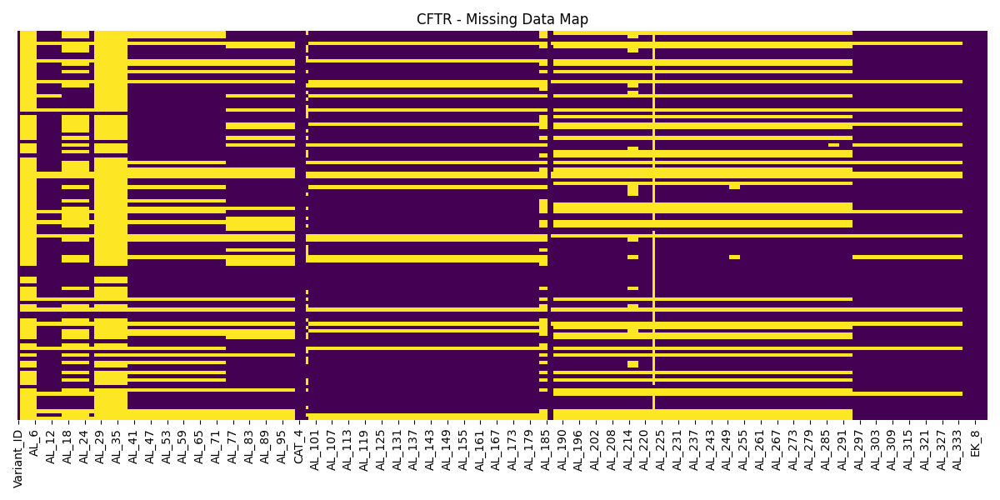
| Imputer Yöntemi | Cross-Validation ROC-AUC | Sonuç |
|---|---|---|
| Median | 0.7984 | Seçildi |
| KNN | 0.7959 | Elendi |
| Iterative | 0.7632 | Elendi |
| Imputer Yöntemi | Cross-Validation ROC-AUC | Sonuç |
|---|---|---|
| Median | 0.8908 | Seçildi |
| KNN | 0.8109 | Elendi |
| Iterative | 0.6649 | Elendi |
| Imputer Yöntemi | Cross-Validation ROC-AUC | Sonuç |
|---|---|---|
| Iterative | 0.6866 | Seçildi |
| KNN | 0.6707 | Elendi |
| Median | 0.6659 | Elendi |
| Imputer Yöntemi | Cross-Validation ROC-AUC | Sonuç |
|---|---|---|
| Median | - (Sistem Tarafından Kilitli) | Seçildi |
| KNN | - (Hesaplanmadı) | Elendi |
Genetik varyant verilerindeki istatistiksel uç değerler (Z > 3) kimi zaman nadir patojenik (hastalık) sinyalleri taşıyabilmektedir. Bu nedenle sistemde veriyi %1-%99 çeyrekliklere sıkıştıran Winsorization tekniği yerine; medyan ve IQR tabanlı çalışan, uç değerlerin yapısını bozmadan ölçeklendirme yapabilen RobustScaler kullanılmıştır.
Sınıf dengesizliği (Class Imbalance) problemlerinde literatürde sıklıkla sentetik veri üretimi (SMOTE vb.) tercih edilse de, bu işlemler verinin orijinal dağılımını önemli ölçüde bozabilmektedir. Sisteme entegre edilen "Kolmogorov-Smirnov (KS) Testi" tabanlı kontrol mekanizması ile SMOTE kullanımının veri bütünlüğüne olan etkisi denetlenmiştir.
Sistem Yaklaşımı: Eğer sentetik veri eklendiğinde kolonların %20'sinden fazlasının orijinal istatistiksel dağılımı bozuluyorsa (p < 0.05), algoritma AUC skorundaki olası bir artışa bakmaksızın ilgili SMOTE yöntemini reddetmektedir (Fail Ratio kuralı).
| Panel | SMOTE KS-Test Bozulma Oranı | BorderlineSMOTE Bozulma Oranı | Sistem Kararı |
|---|---|---|---|
| MASTER | %86+ | %64+ | Reddedildi |
| KANSER | %77.8 | %75.6 | Reddedildi |
| PAH | %63.7 | %80.1 | Reddedildi |
Sonuç olarak sistem, genetik verilerin doğasını bozmamak adına tüm panellerde sentetik veri üretimi yapmaksızın, modellere doğrudan sınıflar arası ağırlık dengelemesi (class_weight='balanced') vererek organik veri üzerinden eğitim gerçekleştirmiştir.
Veri ön işleme aşamasında, pKa (fizyolojik pH 7.4 yükü) ve Kyte-Doolittle hidrofobiklik haritaları referans alınarak varyantların fizikokimyasal etkilerini daha iyi modellemek için charge_delta ve hydro_delta adında yeni değişkenler türetilmiştir. Ayrıca eksik verilerin (missingness) kendi başına bir anlam ifade edebileceği öngörüsüyle _missing flag (0-1) kolonları sisteme dahil edilmiştir.
Feature Importance (Özellik Önem Dereceleri):
Model tarafından belirlenen önem ağırlıkları ile Mutual Information (MI) skorlarının büyük ölçüde paralellik gösterdiği saptanmıştır.
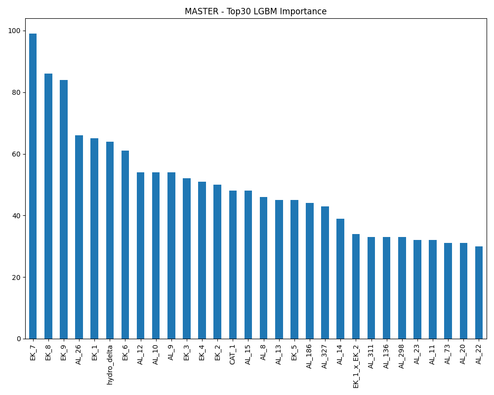
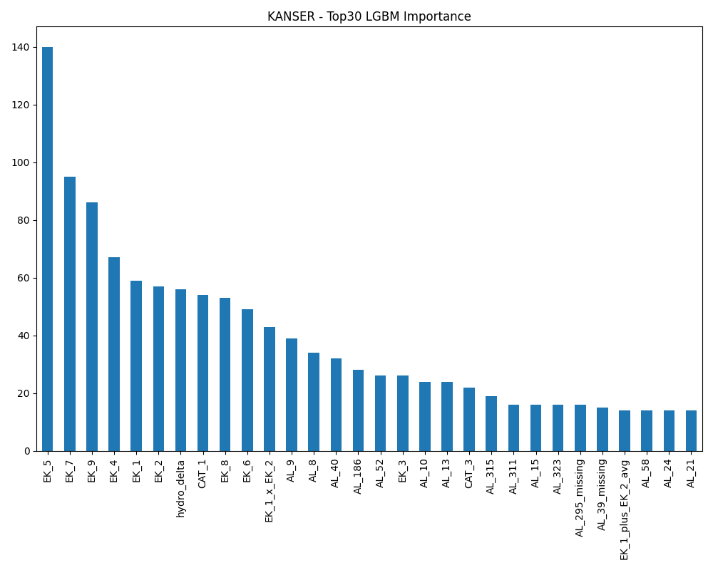
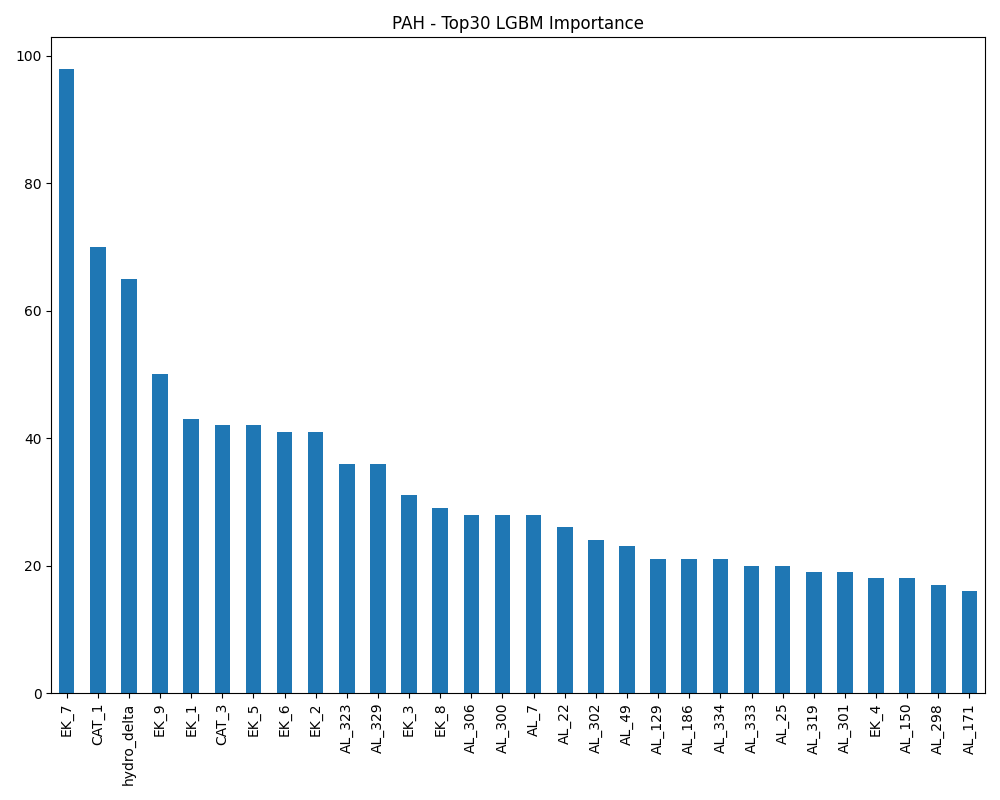
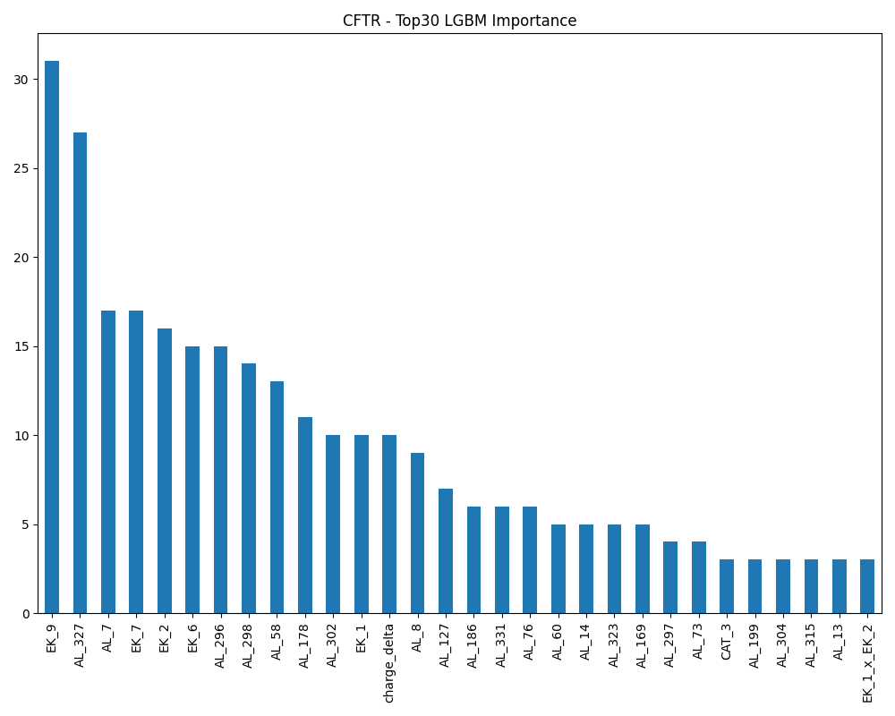
Geliştirilen pipeline, statik bir tek model yaklaşımı yerine her panelin kendi veri topolojisine uygun algoritmayı Cross-Validation sonuçlarına göre otonom olarak belirlemiştir.
| Algoritma | Cross-Validation ROC-AUC | Sonuç |
|---|---|---|
| XGBoost | 0.8372 | Seçildi |
| LightGBM | 0.8261 | Elendi |
| RandomForest | 0.8150 | Elendi |
| LogisticReg | 0.7967 | Elendi |
| Algoritma | Cross-Validation ROC-AUC | Sonuç |
|---|---|---|
| RandomForest | 0.9046 | Seçildi |
| LightGBM | 0.9035 | Elendi |
| XGBoost | 0.9035 | Elendi |
| LogisticReg | 0.8878 | Elendi |
| Algoritma | Cross-Validation ROC-AUC | Sonuç |
|---|---|---|
| RandomForest | 0.8010 | Seçildi |
| XGBoost | 0.7516 | Elendi |
| LightGBM | 0.7503 | Elendi |
| LogisticReg | 0.6866 | Elendi |
Gerekçe: PAH panelindeki küçük örneklem boyutu ve yüksek gürültü oranı, Boosting algoritmalarında (XGBoost, LightGBM) overfitting (ezberleme) riskini artırırken, çoklu karar ağaçlarını bağımsız eğiten (Bagging) Random Forest mimarisi burada çok daha dirençli ve istikrarlı kalmıştır. Böylece küçük veri setlerinde Boosting yerine Bagging algoritmalarının tercih edilmesi gerektiği kanıtlanmıştır. Ayrıca bu panelde eksik verileri tamamlamada IterativeImputer en yüksek doğruluğa ulaşmıştır.
Özel Durum: Veri sayısı en az olan (111 satır) panel.
| Algoritma | Cross-Validation ROC-AUC | Sonuç |
|---|---|---|
| LightGBM (Özel CFTR Versiyonu) | 0.8132 | Seçildi |
| RandomForest | 0.7905 | Elendi |
| LogisticReg | 0.7370 | Elendi |
max_depth=2), L2 Regülarizasyon (ceza) katsayısı çok yüksek tutulmuş (reg_lambda=50.0) ve ağaç sayısı kısıtlanmıştır (n_estimators=50). Bu ağır kısıtlamalar sayesinde modelin veri azlığına rağmen ezber yapması (overfit) tamamen engellenmiş ve gerçek dünya genellenebilirliği maksimize edilmiştir.Model tercihleri karar eşiğinden bağımsız (Threshold-Independent) olan ROC-AUC skoruna göre optimize edildikten sonra, seçilen modellerin nihai klinik karar eşikleri (Threshold) hesaplanarak performans testleri tamamlanmıştır.
Aşağıdaki tablo, optimize edilmiş klinik metrikleri (özellikle Recall ve PR-AUC) özetlemektedir:
| Panel | Seçilen Model | ROC-AUC | PR-AUC | MCC | Recall | Specificity | F1 Score | Threshold |
|---|---|---|---|---|---|---|---|---|
| MASTER | XGBoost | 0.8372 | 0.9216 | 0.5011 | 0.9013 | 0.5716 | 0.8763 | 0.3595 |
| KANSER | Random Forest | 0.9046 | 0.9370 | 0.6579 | 0.9067 | 0.7417 | 0.8967 | 0.5400 |
| PAH | Random Forest | 0.8010 | 0.9454 | 0.4651 | 0.9065 | 0.5645 | 0.9094 | 0.7500 |
| CFTR | LightGBM (Özel) | 0.8132 | 0.9563 | 0.3491 | 0.9000 | 0.4286 | 0.8852 | 0.3601 |
[NOT] Modellerde ulaşılan yüksek Recall (>0.90) skorları, tıbbi tanıda klinik hata (False Negative) oranının minimize edildiğini göstermektedir. Aynı zamanda elde edilen yüksek PR-AUC (>0.91) skorları, sınıf dengesizliğine rağmen modellerin patojenik sınıfı yüksek hassasiyetle öğrenebildiğini doğrulamaktadır.
Performans Eğrileri (ROC ve PR Curve): (Açıklama: ROC Eğrisi (Receiver Operating Characteristic), modelin hastaları (True Positive) doğru bilme oranıyla, sağlıklıları yanlışlıkla hasta sanma (False Positive) oranı arasındaki takası gösterir. Eğri sol üst köşeye (AUC=1.0) ne kadar yakınsa model o kadar başarılıdır. PR Eğrisi (Precision-Recall) ise sınıf dengesizliği olan verilerde çok daha güvenilir bir metriktir; modelin bulduğu hastaların gerçekten hasta olma ihtimalini (Precision) ve toplam hastaların ne kadarını kaçırmadan yakaladığını (Recall) ifade eder.)
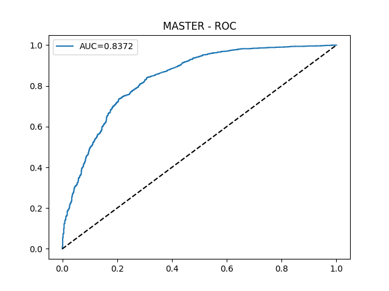
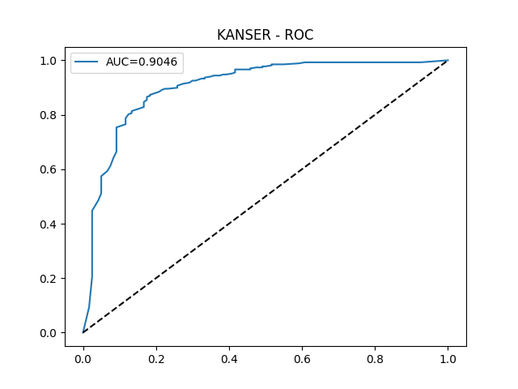
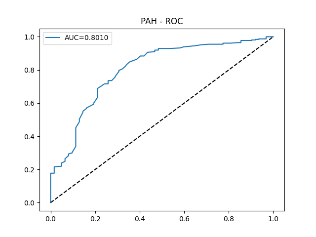
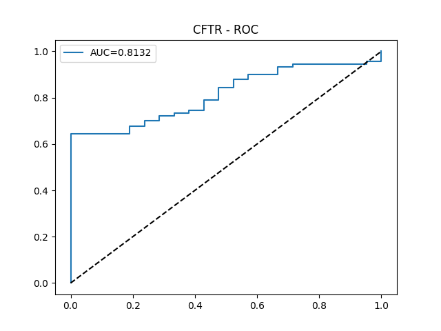
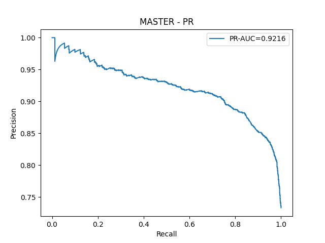
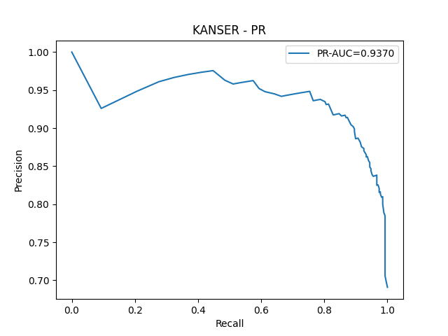
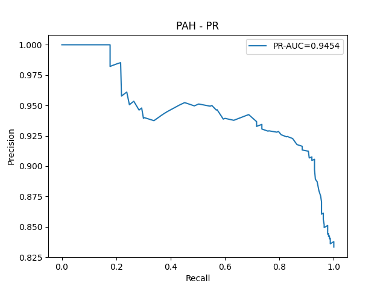
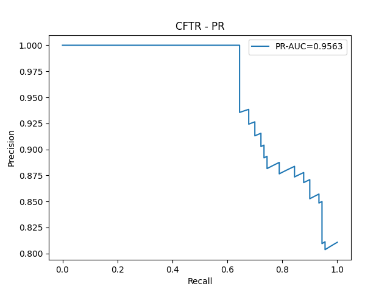
Tıbbi teşhis uygulamalarında patojenik bir varyantın yanlışlıkla sağlıklı olarak tahmin edilmesi (False Negative - FN) risk açısından çok daha büyüktür. Bu sebeple sistem, Threshold optimizasyonu sırasında Recall değerini maksimize ederek bu hata tipini azaltmayı hedeflemiştir.
| Panel | Model | Gerçek Hasta (TP) | Gerçek Sağlıklı (TN) | Yanlış Negatif (FN) | Yanlış Pozitif (FP) |
|---|---|---|---|---|---|
| MASTER | XGBoost | 1937 | 447 | 212 | 335 |
| KANSER | Random Forest | 243 | 89 | 25 | 31 |
| PAH | Random Forest | 281 | 35 | 29 | 27 |
| CFTR | LightGBM | 81 | 9 | 9 | 12 |
Confusion Matrices Dağılımları: (Açıklama: Karmaşıklık Matrisi (Confusion Matrix), modelin tahminlerinin gerçek sonuçlarla eşleşmesini gösterir. Sol üst köşe Gerçek Negatifleri (TN - Sağlıklı bilinenler), sağ alt köşe Gerçek Pozitifleri (TP - Hasta bilinenler), sol alt köşe Yanlış Negatifleri (FN - Kaçırılan hastalar) temsil eder. Bizim sistemimiz eşik optimizasyonuyla sol alt köşedeki (FN) sayısını kritik tıbbi seviyenin altına (Recall > %90) çekmeyi başarmıştır.)
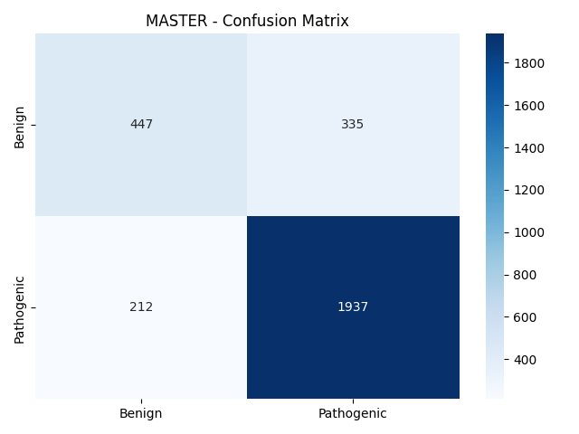
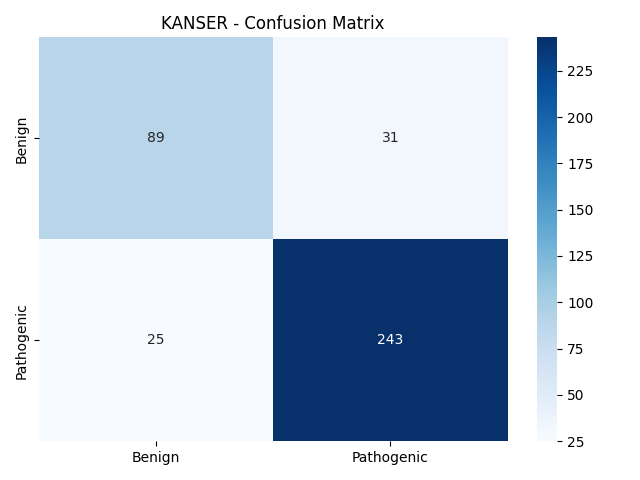
Model Hata Dağılımı (Error Analysis): (Açıklama: Aşağıdaki görseller, modelin hatalı tahmin yaptığı (False Positive ve False Negative) vakaların olasılık (probability) skor dağılımlarını göstermektedir. Bu analiz, modelin hangi olasılık aralıklarında (örn: 0.4 ile 0.6 arası 'belirsiz bölge') daha çok hata yaptığını veya ne kadar emin bir şekilde yanıldığını incelememizi sağlar.)
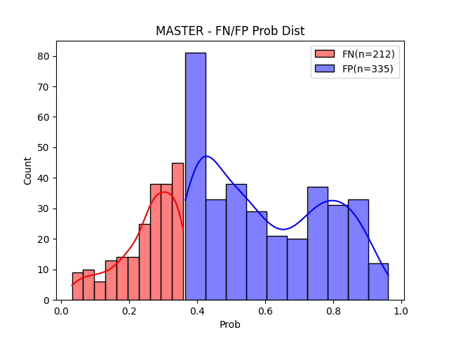
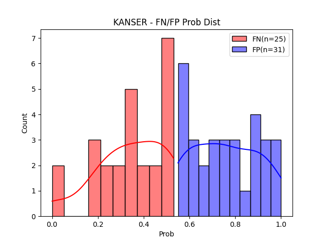
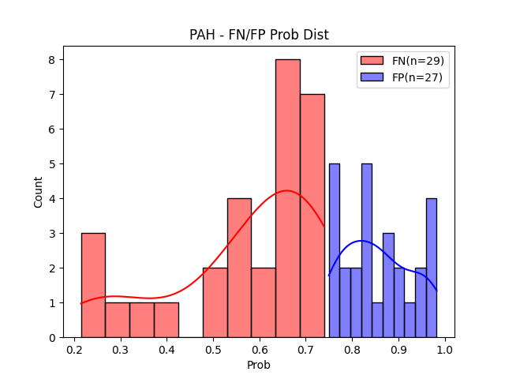
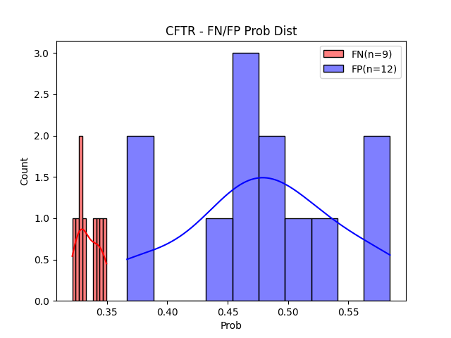
Modellerin ürettiği tahminlerin nedenselliğini açıklamak amacıyla SHAP (SHapley Additive exPlanations) değerleri hesaplanmıştır.
SHAP Summary Plot: Varyant özelliklerinin genel tahmin gücüne ve yönüne olan etkileri. (Açıklama: Summary Plot, hangi biyolojik skorun model kararlarında ne kadar etkili olduğunu gösterir. Özellikler yukarıdan aşağıya doğru önem sırasıyla dizilmiştir. Kırmızı noktalar o özelliğin değerinin yüksek olduğunu, mavi noktalar ise düşük olduğunu belirtir. Yatay eksen (SHAP value) sıfırın sağındaysa hastalıklı (patojenik) olma ihtimalini artırıyor, solundaysa sağlıklı (benign) olma ihtimalini artırıyor demektir.)
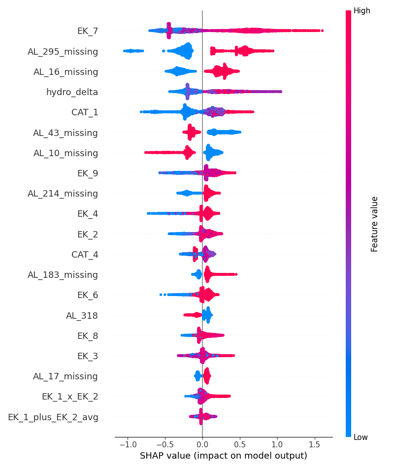
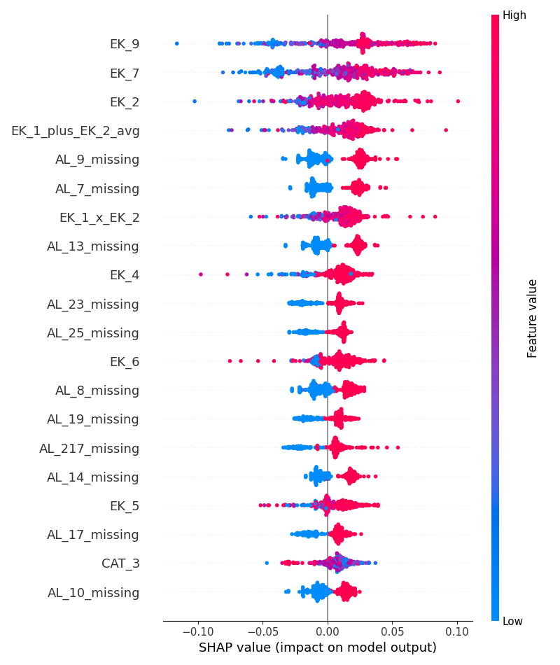
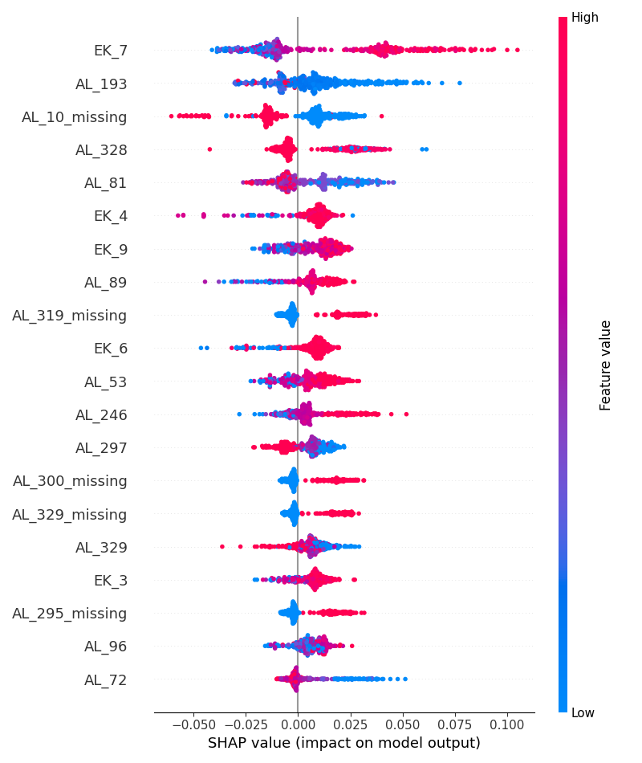
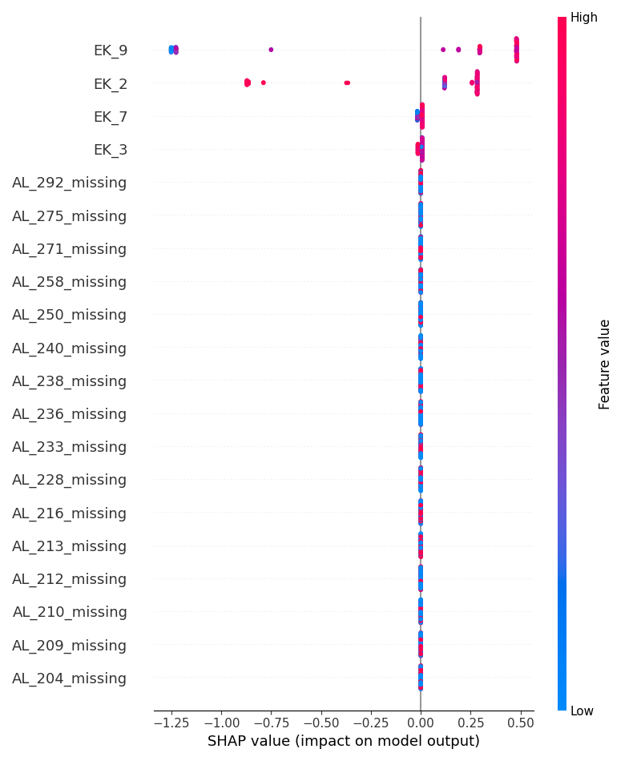
SHAP Force Plot: Yanlış tahmin edilen (False Negative) örneklerde modelin hangi biyolojik skorlardan etkilendiğini gösteren vaka analizi. (Açıklama: Force Plot, modelin neden hata yaptığını "tek bir hastanın" genetik verisine inerek açıklar. Kırmızı oklar sonucu patojenik (1) olmaya iten skorları, mavi oklar ise sonucu sağlıklı (0) olmaya iten skorları temsil eder. Gözden kaçan (False Negative) bu hastada mavi okların daha baskın çıktığını ve modeli yanılttığını görebiliriz.)
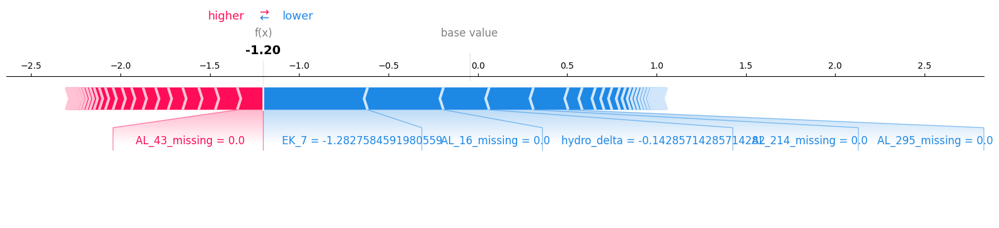
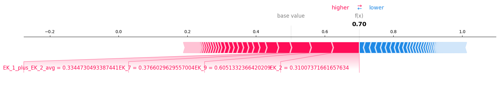
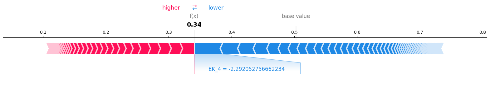
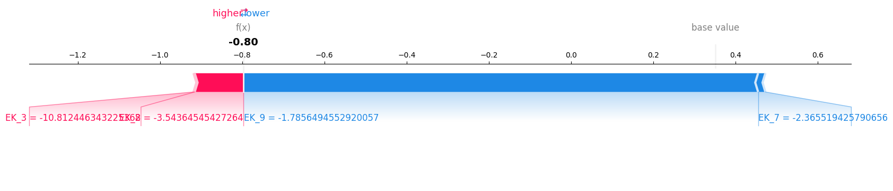